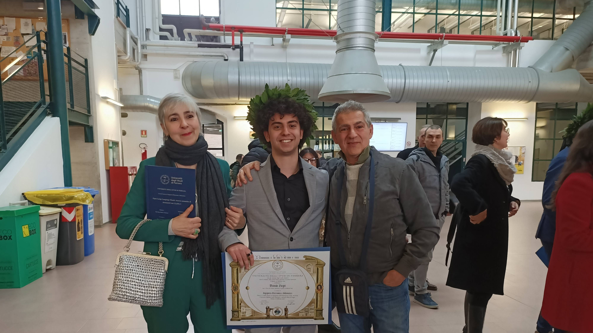
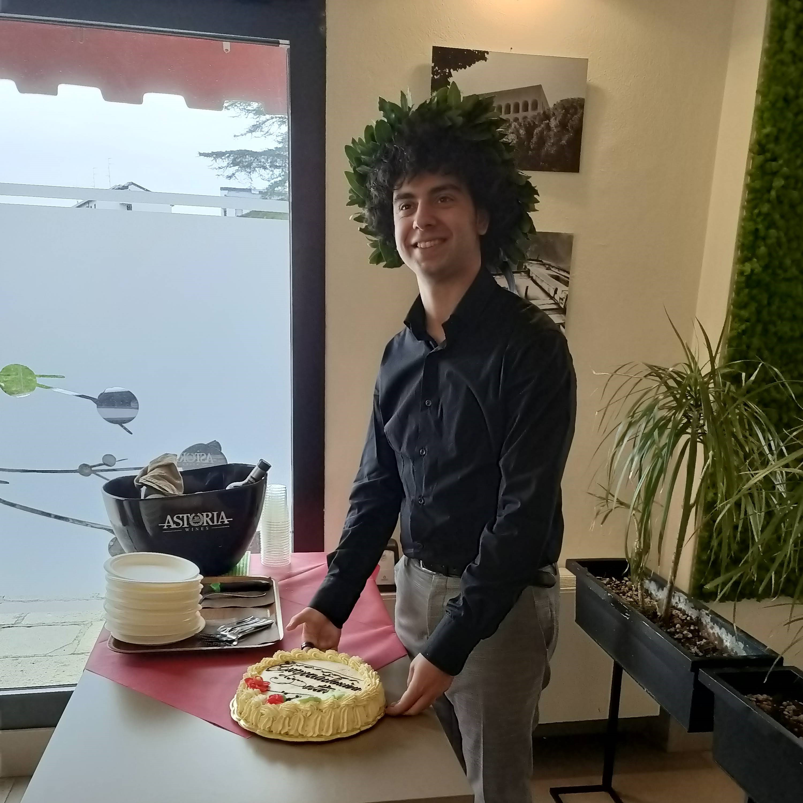
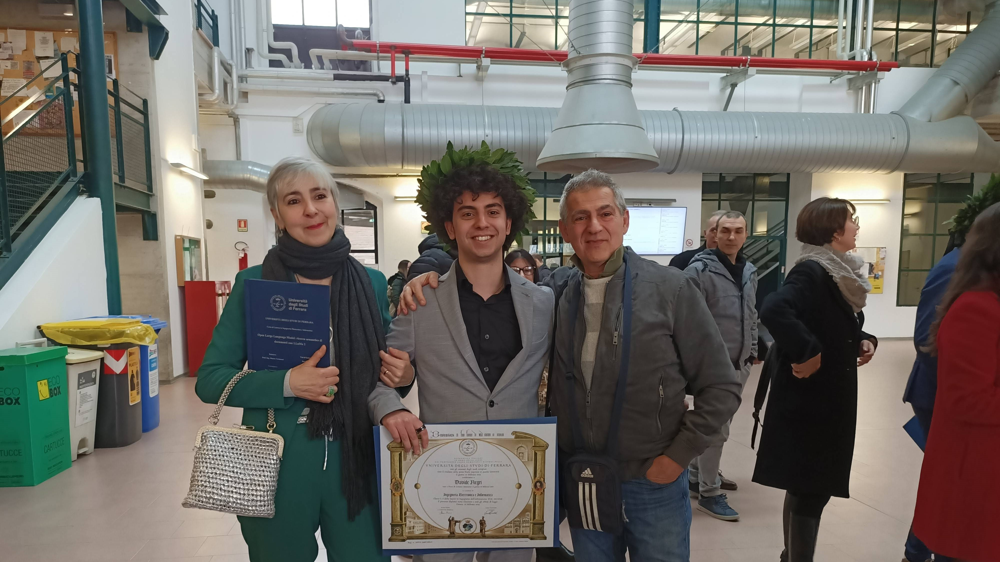
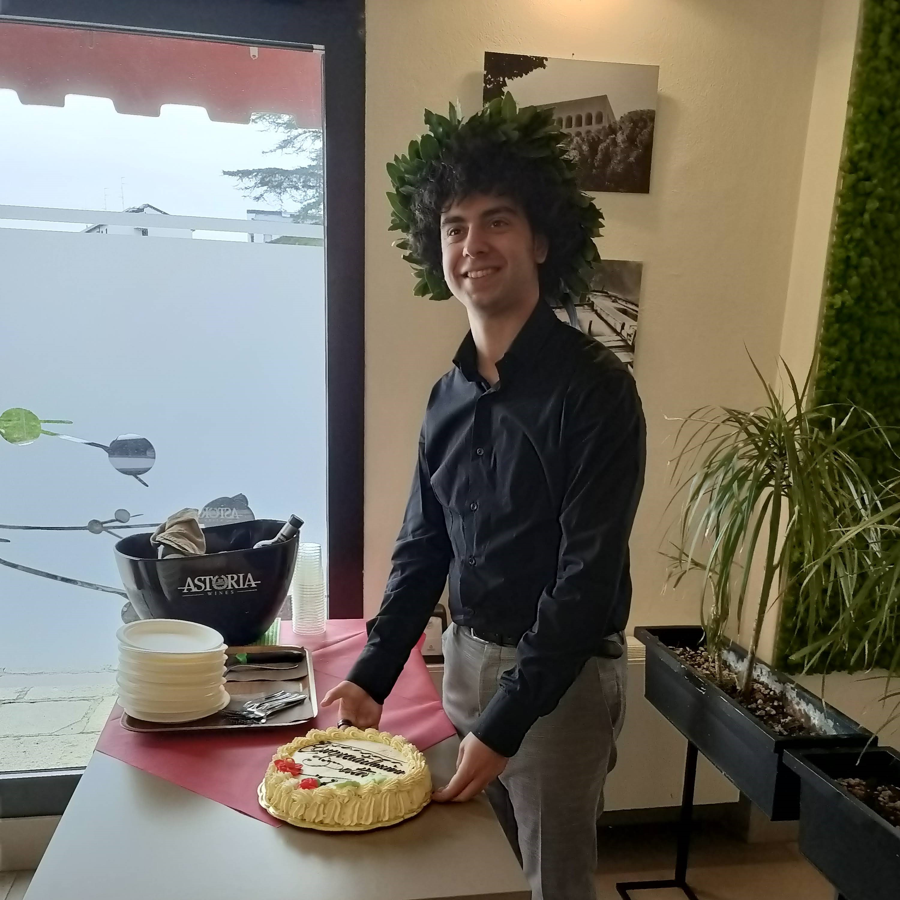

About Me 👨💻
Hello! I'm Davide Negri, a passionate software engineer with a love for coding and exploring new technologies. I enjoy solving problems and finding solutions.
My Accademic Career 👨🎓
I study at UNIFE, Univeristy of Ferrara, at the Department of Engineering, specializing in AI technologies. My expertise includes multiple languages like C, Java and Python, modern frameworks like Spring, and AI specific tools and libraries like PyTorch. I enjoy collaborating with my teamates and delivering high-quality software for specific use cases.
My Passions 💘
- Coding and learning new tech stuff
- Artificial Intelligence
- Videogames and Gaming in general
- Rock music
Gallery
 



Add your own images to the gallery by replacing the image files.